# Instalar e carregar pacotes
#Verificação e instalação automática de pacotes necessários
packages <- c("readxl", "dplyr", "ggplot2", "epifitter", "agricolae", "car", "gganimate", "animate", "DHARMa", "ggthemes", "skimr", "DataExplorer", "tidyverse", "gifski", "showtext", "sysfonts","png", "easystats", "performance", "emmeans", "multcomp")
new_packages <- packages[!(packages %in% installed.packages()[, "Package"])]
if(length(new_packages)) install.packages(new_packages)
# Carregar os pacotes
library(readxl)
library(dplyr)
library(ggplot2)
library(epifitter)
library(agricolae)
library(car) # para Levene
library(gganimate)
library(animate)
library(DHARMa)
library(skimr)
library(DataExplorer)
library(ggthemes)
library(tidyverse)
library(gifski)
library(showtext) #Para utilizar outras fontes
library(sysfonts) #Para utilizar outras fontes
library(png)
library(easystats)
library(performance)
library(emmeans)
library(multcomp)TRABALHO FINAL FIP 606 - ABNER, DAIANE E MARIA IZABEL
Análise de dados do PowderyMildew
Este site foi desenvolvido por Abner Palhares; Daiane Fernandes; Maria Izabel Leite com o objetivo de apresentar as análises realizadas a partir do conjunto de dados PowderyMildew, disponibilizado pelo pacote Epifitter no R. A atividade integra o trabalho final da disciplina FIP 606 – Análise e Visualização de Dados em Fitopatologia, ministrada pelo professor Emerson Del Ponte.
A análise teve como foco a severidade da doença oídio, causada por Leveillula taurica, em tomateiro cultivado sob diferentes sistemas de irrigação e níveis de umidade do solo, em um sistema de cultivo orgânico.
Obtenção dos dados
Os dados utilizados neste estudo foram obtidos a partir do conjunto PowderyMildew, disponível no pacote Epifitter do R (RStudio®). Este conjunto reúne informações experimentais sobre a progressão do oídio (Leveillula taurica) em tomateiros cultivados sob diferentes sistemas de irrigação e níveis de umidade do solo, em um sistema de produção orgânico.
O pacote Epifitter foi desenvolvido para facilitar a análise epidemiológica de doenças em plantas, oferecendo um conjunto de funções para visualização, descrição, ajuste e comparação de curvas de progresso de doenças.
Estrutura do conjunto de dados
O data frame PowderyMildew contém 240 observações distribuídas em 5 variáveis principais, descritas a seguir:
Irrigation_type: indica o sistema de irrigação adotado, sendo:
MS: microaspersão;
MS above canopy: microaspersão acima do dossel;
Overhead: aspersão aérea;
Drip: irrigação por gotejamento;
Furrow: sulco.
Moisture: nível de umidade do solo no momento da avaliação, classificado em:
“High” (alta umidade);
“Moderate” (umidade moderada).
Block: identifica os blocos experimentais, representando as repetições no delineamento experimental;
Time: vetor numérico contendo os dias correspondentes aos pontos de avaliação da doença ao longo do tempo;
Sev: vetor numérico com os valores de severidade da doença, registrados em escala proporcional (valores entre 0 e 1), representando a proporção da área foliar afetada.
Esse banco de dados foi utilizado como base para todas as análises estatísticas e gráficas realizadas neste trabalho.
Análise de dados do PowderyMildew:
Introdução
O banco de dados analisado neste trabalho refere-se aos resultados de um experimento conduzido com o objetivo de avaliar o desenvolvimento do oídio (Leveillula taurica) na cultura do tomateiro sob diferentes condições de irrigação e umidade do solo.
Foram avaliadas cinco estratégias de irrigação combinadas com dois níveis de umidade do solo (alta e moderada), totalizando diferentes condições experimentais, embora o delineamento não tenha sido fatorial completo. O experimento incluiu o monitoramento da severidade da doença ao longo do tempo (0, 7, 14, 21, 28, 35, 42, 49, 56 e 63). A partir desses dados, buscou-se compreender de que forma o ambiente de cultivo, especialmente as práticas de irrigação podem influenciar a severidade do oídio.
Objetivo geral
Por meio da análise dos dados, objetivou-se avaliar a influência de diferentes sistemas de irrigação e níveis de umidade do solo sobre a severidade do oídio (Leveillula taurica) em tomateiro cultivado em sistema orgânico, considerando o progresso da doença ao longo do tempo.
Objetivos específicos
Analisar a dinâmica da severidade do oídio em diferentes combinações de irrigação e umidade do solo, ao longo do tempo;
Identificar quais estratégias de irrigação contribuem para a redução da severidade da doença;
Verificar a interação entre tipo de irrigação e nível de umidade na progressão do oídio.
Hipóteses testadas
Hipótese nula (H₀):
Não há diferença significativa na severidade da doença entre os diferentes tipos de irrigação e níveis de umidade do solo. A média da severidade é igual em todos os tratamentos avaliados.
Hipótese alternativa (Hₐ):
Pelo menos uma das combinações de tipo de irrigação e nível de umidade apresenta severidade significativamente diferente das demais, indicando efeito do tratamento sobre o desenvolvimento da doença.
Análise da variável resposta (Severidade do oídio)
Carregamento automático de pacotes
A primeira etapa para a análise dos dados é a instalação e o carregamento dos pacotes e dados no ambiente R.
Importação dos dados
Como os dados de severidade estão localizados em uma planilha do Excel, para realizar a importação dos dados necessitou-se utilizar a função read_excel( ) do pacote readxl. O data frame foi atribuído ao objeto denominado dados.
dados <- read_excel("dados.xlsx")
dados# A tibble: 240 × 5
irrigation_type moisture block time sev
<chr> <chr> <dbl> <dbl> <dbl>
1 Drip High moisture 1 0 0.011
2 Drip High moisture 2 0 0.011
3 Drip High moisture 3 0 0.011
4 Drip High moisture 1 7 0.034
5 Drip High moisture 2 7 0.04
6 Drip High moisture 3 7 0.036
7 Drip High moisture 1 14 0.114
8 Drip High moisture 2 14 0.109
9 Drip High moisture 3 14 0.097
10 Drip High moisture 1 21 0.126
# ℹ 230 more rowsVerificação do conjunto de dados
Para realizar uma inspeção inicial dos dados, foram utilizadas três funções principais no R: glimpse(), skim() e names().
A função glimpse mostra do pacote dplyr, permite uma visão geral compacta do conjunto de dados. Ela exibe:
O número de linhas e colunas;
O tipo de dado de cada variável (por exemplo, numérico, caracterer);
Os primeiros valores presentes em cada coluna;
A função skim(), do pacote skimr fornece um resumo estatístico mais detalhado. Inclui média, mediana, mínimo, máximo, número de valores ausentes (NA).
A função names() foi empregada para listar os nomes reais das colunas do dataframe, permitindo identificar com clareza as variáveis disponíveis para análise.
glimpse(dados)Rows: 240
Columns: 5
$ irrigation_type <chr> "Drip", "Drip", "Drip", "Drip", "Drip", "Drip", "Drip"…
$ moisture <chr> "High moisture", "High moisture", "High moisture", "Hi…
$ block <dbl> 1, 2, 3, 1, 2, 3, 1, 2, 3, 1, 2, 3, 1, 2, 3, 1, 2, 3, …
$ time <dbl> 0, 0, 0, 7, 7, 7, 14, 14, 14, 21, 21, 21, 28, 28, 28, …
$ sev <dbl> 0.011, 0.011, 0.011, 0.034, 0.040, 0.036, 0.114, 0.109…skim(dados)| Name | dados |
| Number of rows | 240 |
| Number of columns | 5 |
| _______________________ | |
| Column type frequency: | |
| character | 2 |
| numeric | 3 |
| ________________________ | |
| Group variables | None |
Variable type: character
| skim_variable | n_missing | complete_rate | min | max | empty | n_unique | whitespace |
|---|---|---|---|---|---|---|---|
| irrigation_type | 0 | 1 | 2 | 15 | 0 | 5 | 0 |
| moisture | 0 | 1 | 13 | 17 | 0 | 2 | 0 |
Variable type: numeric
| skim_variable | n_missing | complete_rate | mean | sd | p0 | p25 | p50 | p75 | p100 | hist |
|---|---|---|---|---|---|---|---|---|---|---|
| block | 0 | 1 | 2.00 | 0.82 | 1 | 1.00 | 2.0 | 3.00 | 3.00 | ▇▁▇▁▇ |
| time | 0 | 1 | 31.50 | 20.15 | 0 | 14.00 | 31.5 | 49.00 | 63.00 | ▇▇▇▇▇ |
| sev | 0 | 1 | 0.13 | 0.12 | 0 | 0.03 | 0.1 | 0.15 | 0.46 | ▇▅▁▁▂ |
names(dados)[1] "irrigation_type" "moisture" "block" "time"
[5] "sev" Estabelecendo o visual do trabalho
Estabelecendo fontes
Para aprimorar a estética visual de gráficos e aplicações no R, foram adicionadas fontes do Google Fonts utilizando a função font_add_google() da biblioteca showtext. Cada chamada da função carrega uma fonte específica, associando-a a um nome de família que pode ser usado posteriormente em elementos gráficos, como títulos, eixos e textos.
As fontes adicionadas foram: Inter, Manrope, Nunito, Work Sans, Lexend, Raleway, Quicksand, Roboto e Poppins.
Após a adição das fontes, a função showtext_auto() foi ativada. Essa função garante que as fontes personalizadas sejam corretamente renderizadas em gráficos gerados com o R, inclusive ao exportar para imagens.
font_add_google(name = "inter", family = "inter")
font_add_google(name = "manrope", family = "manrope")
font_add_google(name = "nunito", family = "nunito")
font_add_google(name = "work sans", family = "work sans")
font_add_google(name = "lexend", family = "lexend")
font_add_google(name = "raleway", family = "raleway")
font_add_google(name = "quicksand", family = "quicksand")
font_add_google(name = "roboto", family = "roboto")
font_add_google(name = "poppins", family = "poppins")
showtext_auto()Estabelecendo cores
O vetor cores_irrigation define um conjunto de cores associadas a diferentes métodos de irrigação, permitindo a padronização visual em gráficos.
Cada tipo de irrigação é representado por uma cor específica, facilitando a visualização dos dados:
Drip: representado pela cor azul ecuro (#000194);
Furrow: verde vibrante (#28C800);
MS: vermelho intenso (#C90A00);
MS above canopy: laranja (#E68A2E);
Overhead: amarelo brilhante (#FFDE00);
cores_irrigation <- c(
"Drip" = "#000194",
"Furrow" = "#28C800",
"MS" = "#C90A00",
"MS above canopy" = "#E68A2E",
"Overhead" = "#FFDE00"
)
cores_contorno <- c(
"Drip" = "#000060",
"Furrow" = "#1E9E00",
"MS" = "#990700",
"MS above canopy" = "#A6601F",
"Overhead" = "#CCA800"
)Análise exploratória dos dados
Na etapa inicial da análise exploratória, foi utilizada a função plot_missing() do pacote DataExplorer, que gera um gráfico de barras indicando a porcentagem de dados faltantes (valores NA) por variável no conjunto de dados. Essa visualização permite identificar rapidamente colunas com problemas de completude, facilitando decisões sobre limpeza ou imputação de dados. O gráfico gerado foi personalizado com o título “Dados Faltantes”, e o tema visual foi ajustado com theme_hc() para melhor apresentação.
plot_missing(dados)
A função summary() é uma ferramenta prática para explorar rapidamente os dados. É usada para gerar um resumo estatístico básico de um data frame. Fornece medidas como mínimo, máximo, média, mediana e quartis para variáveis numéricas, e a frequência para variáveis categóricas.
summary(dados) irrigation_type moisture block time
Length:240 Length:240 Min. :1 Min. : 0.0
Class :character Class :character 1st Qu.:1 1st Qu.:14.0
Mode :character Mode :character Median :2 Median :31.5
Mean :2 Mean :31.5
3rd Qu.:3 3rd Qu.:49.0
Max. :3 Max. :63.0
sev
Min. :0.00300
1st Qu.:0.03275
Median :0.09700
Mean :0.12710
3rd Qu.:0.15025
Max. :0.45700 Organização dos dados
Ao examinar os dados, observou-se que os tratamentos (irrigation_type: Drip, MS, Furrow, MS Above canopy, Overhead) não estão igualmente distribuídos entre as duas condições de umidade (moisture: high e moderate). Dessa forma para a análise visual dos dados resolveu-se dividi-los de acordo com seus níveis de umidade.
# Subconjunto para irrigação com umidade moderada
dados_moderate <- dados %>% filter(moisture == "Moderate moisture")
# Subconjunto para irrigação com umidade alta
dados_high <- dados %>% filter(moisture == "High moisture")
dados_moderate# A tibble: 120 × 5
irrigation_type moisture block time sev
<chr> <chr> <dbl> <dbl> <dbl>
1 MS Moderate moisture 1 0 0.009
2 MS Moderate moisture 2 0 0.009
3 MS Moderate moisture 3 0 0.009
4 MS Moderate moisture 1 7 0.028
5 MS Moderate moisture 2 7 0.025
6 MS Moderate moisture 3 7 0.021
7 MS Moderate moisture 1 14 0.077
8 MS Moderate moisture 2 14 0.08
9 MS Moderate moisture 3 14 0.071
10 MS Moderate moisture 1 21 0.056
# ℹ 110 more rowsdados_high# A tibble: 120 × 5
irrigation_type moisture block time sev
<chr> <chr> <dbl> <dbl> <dbl>
1 Drip High moisture 1 0 0.011
2 Drip High moisture 2 0 0.011
3 Drip High moisture 3 0 0.011
4 Drip High moisture 1 7 0.034
5 Drip High moisture 2 7 0.04
6 Drip High moisture 3 7 0.036
7 Drip High moisture 1 14 0.114
8 Drip High moisture 2 14 0.109
9 Drip High moisture 3 14 0.097
10 Drip High moisture 1 21 0.126
# ℹ 110 more rowsAnálise visual
Usando o pacote ggplot2, foi explorado visualmente, por meio de diferentes gráficos, os dados de severidade da doença.
Gráficos de pontos
Nesta análise, foram desenvolvidos dois gráficos de dispersão. Esses gráficos de pontos fornecem uma visão clara da distribuição da severidade da doença ao longo do tempo, permitindo comparar como os diferentes tipos de irrigação influenciam os resultados sob distintas condições de umidade.
Gráfico de Severidade ao Longo do Tempo – Umidade Moderada
Para o conjunto dados_moderate, foi utilizado o tempo (time) no eixo X e a severidade da doença (sev) no eixo Y. A variável irrigation_type foi representada por diferentes cores, facilitando a comparação entre os tratamentos. A função geom_jitter() foi empregada para aplicar uma leve dispersão horizontal aos pontos. As cores dos tratamentos foram definidas manualmente com scale_color_manual() e a estética do gráfico foi finalizada com theme_minimal().
# Gráficos de pontos (dados de umidade moderada)
ggplot(dados_moderate, aes(x = time, y = sev, color = irrigation_type)) +
geom_jitter(size = 2, alpha = 0.7) +
labs(
title = "Severidade ao longo do tempo - Umidade Moderada",
x = "Tempo",
y = "Severidade",
color = "Tipo de Irrigação"
) +
scale_color_manual(values = cores_irrigation) +
theme_minimal() + # base limpa
theme(
plot.title = element_text(family = "poppins", size = 15, face = "bold", hjust = 0.5),
plot.title.position = "plot",
axis.title = element_text(family = "roboto", size = 12, face = "plain"),
axis.text = element_text(family = "roboto", size = 12),
legend.title = element_text(family = "roboto", size = 13),
legend.text = element_text(family = "roboto", size = 10),
legend.position = "bottom"
)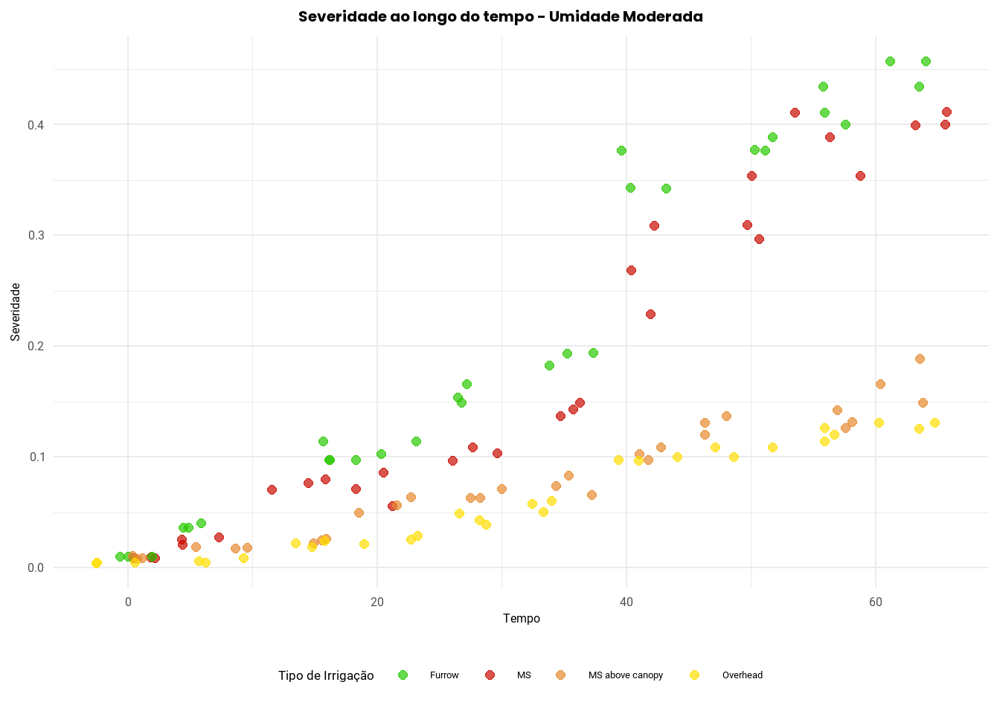
Gráfico de Severidade ao Longo do Tempo – Umidade Alta
Para a condição de umidade alta, foi construído um gráfico semelhante, utilizando o conjunto dados_high.
# Gráficos de pontos (dados de umidade alta)
ggplot(dados_high, aes(x = time, y = sev, color = irrigation_type)) +
geom_jitter(size = 2, alpha = 0.7) +
labs(
title = "Severidade ao longo do tempo - Umidade Alta",
x = "Tempo",
y = "Severidade",
color = "Tipo de Irrigação"
) +
scale_color_manual(values = cores_irrigation) +
theme_minimal() + # base limpa
theme(
plot.title = element_text(family = "poppins", size = 15, face = "bold", hjust = 0.5),
plot.title.position = "plot",
axis.title = element_text(family = "roboto", size = 12, face = "plain"),
axis.text = element_text(family = "roboto", size = 12),
legend.title = element_text(family = "roboto", size = 13),
legend.text = element_text(family = "roboto", size = 10),
legend.position = "bottom"
)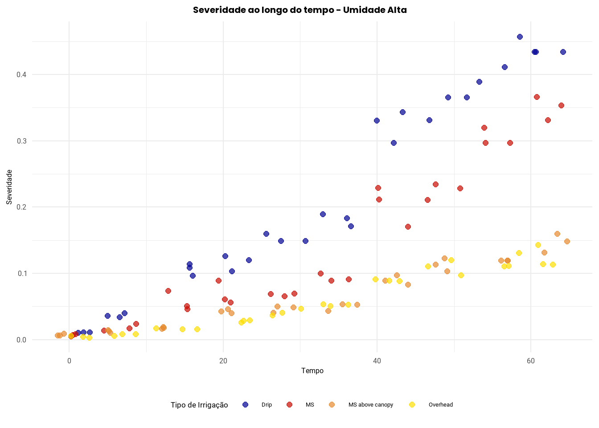
Gráfico de pontos e linhas
Antes da construção do gráfico, os dados foram agrupados pelas variáveis tratamento (combinação de tipo de irrigação + umidade), e time (tempo de avaliação). Em seguida, foi calculada a média da severidade (sev_mean) e o desvio padrão (sev_sd) para cada grupo. Ambas as métricas foram multiplicadas por 100 para expressar os valores em percentual:
O gráfico foi gerado com base no objeto dados3, contendo os valores médios e as respectivas variações da severidade. Os principais elementos visuais são: Linhas (geom_line): mostram a evolução média da severidade ao longo do tempo para cada tratamento. Pontos (geom_point): indicam os valores médios pontuais, com o preenchimento colorido conforme o tratamento. Barras de erro (geom_errorbar): representam a variação (± desvio padrão) em torno da média, permitindo avaliar a dispersão dos dados.
Preparação e agregação dos dados
Utilizou-se a função mutate() para criar uma nova variável chamada “tratamento”, que combina os fatores tipo de irrigação (irrigation_type) e nível de umidade do solo (moisture) em uma única coluna, separadas por ” + “.
Além disso, a variável irrigation_type foi convertida para fator, permitindo seu uso na definição das cores dos gráficos.
Em seguida, os dados foram agregados com group_by(). Com summarise(), foram calculadas: A média da severidade da doença (sev_mean), expressa em porcentagem. O desvio padrão da severidade (sev_sd), também em porcentagem.
Esses valores foram reunidos em um novo conjunto de dados (dados3) que serviu de base para a construção de gráficos de tendência com barras de erro, permitindo a visualização da evolução da severidade da doença ao longo do tempo, com comparação entre os diferentes tratamentos.
#ALTERAÇÃO DE DADOS
dados2 <- dados %>%
mutate(
tratamento = paste(irrigation_type, moisture, sep = " + "), # >>> coluna usada no eixo x
irrigation_type = as.factor(irrigation_type) # >>> usada para definir as cores
)
dados3 <- dados2 %>%
group_by(tratamento, irrigation_type, moisture, time) %>%
summarise(
sev_mean = mean(sev, na.rm = TRUE) * 100,
sev_sd = sd(sev, na.rm = TRUE) * 100
)Gráfico de pontos e linhas para severidade moderada
# Gráfico para Moderate moisture
ggplot(
dados3 %>% filter(moisture == "Moderate moisture"),
aes(x = time, y = sev_mean, color = irrigation_type, fill = irrigation_type)
) +
geom_line(aes(group = tratamento), size = 1) +
geom_point(shape = 21, size = 2, color = "black") +
geom_errorbar(aes(ymin = sev_mean - sev_sd, ymax = sev_mean + sev_sd),
width = 0, alpha = 1) +
theme_bw() +
theme(
plot.title = element_text(family = "poppins", size = 15, face = "bold", hjust = 0.5),
plot.title.position = "plot",
axis.title = element_text(family = "roboto", size = 12, face = "plain"),
axis.text.x = element_text(family = "roboto", size = 11), # alterado para mostrar texto ao invés de blank
axis.text.y = element_text(family = "roboto", size = 12),
legend.title = element_text(family = "roboto", size = 13),
legend.text = element_text(family = "roboto", size = 10),
legend.position = "bottom"
) +
labs(
title = "Severidade da doença - Umidade Moderada",
x = "Tempo (dias)",
y = "Disease severity (%)",
color = "Tipo de irrigação",
fill = "Tipo de irrigação"
) +
scale_color_manual(values = cores_irrigation) +
scale_fill_manual(values = cores_irrigation)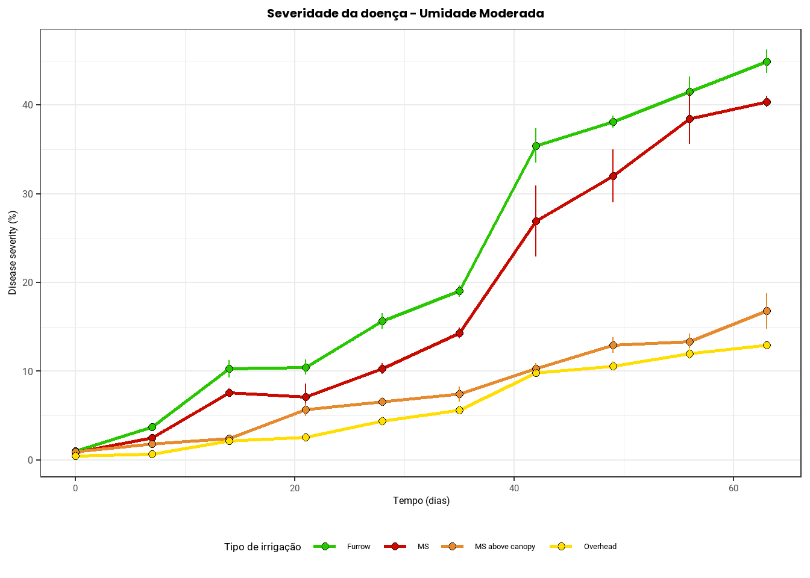
Gráfico de pontos e linhas para severidade alta
# Gráfico para high moisture
ggplot(
dados3 %>% filter(moisture == "High moisture"),
aes(x = time, y = sev_mean, color = irrigation_type, fill = irrigation_type)
) +
geom_line(aes(group = tratamento), size = 1) +
geom_point(shape = 21, size = 2, color = "black") + # fill é mapeado, contorno preto fixo
geom_errorbar(aes(ymin = sev_mean - sev_sd, ymax = sev_mean + sev_sd),
width = 0, alpha = 1) +
theme_bw() +
theme(
plot.title = element_text(family = "poppins", size = 15, face = "bold", hjust = 0.5),
plot.title.position = "plot",
axis.title = element_text(family = "roboto", size = 12, face = "plain"),
axis.text.x = element_text(family = "roboto", size = 11), # alterado para mostrar texto ao invés de blank
axis.text.y = element_text(family = "roboto", size = 12),
legend.title = element_text(family = "roboto", size = 13),
legend.text = element_text(family = "roboto", size = 10),
legend.position = "bottom"
)+
labs(
title = "Severidade da doença - Alta Umidade",
x = "Tempo (dias)",
y = "Disease severity (%)",
color = "Tipo de irrigação",
fill = "Tipo de irrigação"
) +
scale_color_manual(values = cores_irrigation) +
scale_fill_manual(values = cores_irrigation)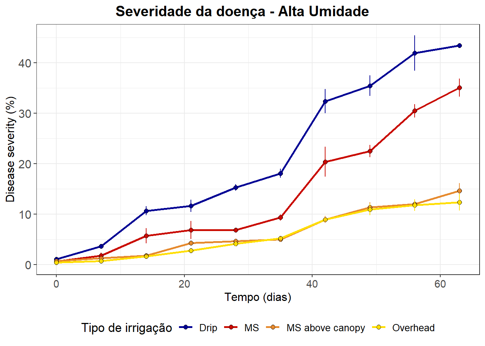
Gráfico de pontos e linhas animado
Foram criadas animações para ilustrar a evolução da severidade da doença ao longo do tempo sob condição específicas de solo, considerando os diferentes tipos de irrigação avaliados no experimento.
Para isso, os dados foram filtrados de forma a incluir apenas as observações com umidade classificada como “moderate moisture” em um gráfico e “high moisture” no outro. Em seguida, utilizou-se o pacote ggplot2 para construir o gráfico.
A animação foi gerada com a função animate() do pacote gganimate, com taxa de 10 quadros por segundo, resolução de 800x500 pixels e salvo como arquivo .gif nomeado “severidade_[moisture_level]_moisture.gif”.
Essa visualização dinâmica permite observar de forma clara como a severidade da doença evolui ao longo do tempo sob diferentes tipos de irrigação.
Umidade moderada
gif_moderate <- ggplot(
dados3 %>% filter(moisture == "Moderate moisture"),
aes(x = time, y = sev_mean, color = irrigation_type, fill = irrigation_type)
) +
geom_line(aes(group = tratamento), linewidth = 1) +
geom_point(shape = 21, size = 2, color = "black") +
geom_errorbar(
aes(ymin = sev_mean - sev_sd, ymax = sev_mean + sev_sd),
width = 0.2, alpha = 0.8
) +
theme_bw() +
theme(
plot.title = element_text(family = "poppins", size = 15, face = "bold", hjust = 0.5),
axis.title = element_text(family = "roboto", size = 12),
axis.text = element_text(family = "roboto", size = 11),
legend.title = element_text(family = "roboto", size = 13),
legend.text = element_text(family = "roboto", size = 10),
legend.position = "bottom"
) +
labs(
title = "Umidade Moderada — Dia: {frame_along}",
x = "Tempo (dias)",
y = "Severidade da doença (%)",
color = "Tipo de irrigação",
fill = "Tipo de irrigação"
) +
scale_color_manual(values = cores_irrigation) +
scale_fill_manual(values = cores_irrigation) +
transition_reveal(along = time)
#gif_anim_moderate <- animate(gif_moderate, fps = 10, width = 800, height = 500, renderer = #gifski_renderer())
#anim_save("severidade_moderate_moisture.gif", gif_anim_moderate)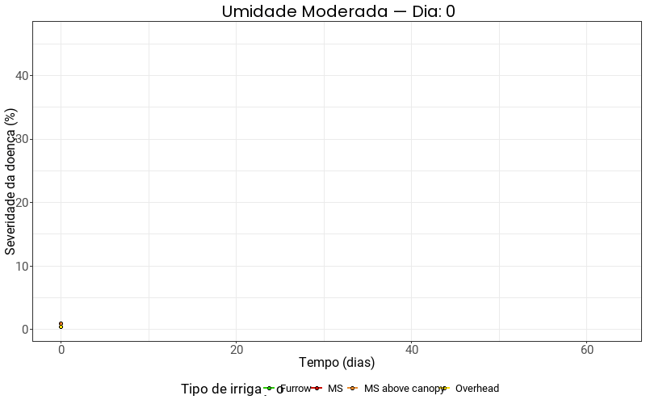
Umidade alta
gif_high <- ggplot(
dados3 %>% filter(moisture == "High moisture"),
aes(x = time, y = sev_mean, color = irrigation_type, fill = irrigation_type)
) +
geom_line(aes(group = tratamento), linewidth = 1) +
geom_point(shape = 21, size = 2, color = "black") +
geom_errorbar(
aes(ymin = sev_mean - sev_sd, ymax = sev_mean + sev_sd),
width = 0.2, alpha = 0.8
) +
theme_bw() +
theme(
plot.title = element_text(family = "poppins", size = 15, face = "bold", hjust = 0.5),
axis.title = element_text(family = "roboto", size = 12),
axis.text = element_text(family = "roboto", size = 11),
legend.title = element_text(family = "roboto", size = 13),
legend.text = element_text(family = "roboto", size = 10),
legend.position = "bottom"
) +
labs(
title = "Alta Umidade — Dia: {frame_along}",
x = "Tempo (dias)",
y = "Severidade da doença (%)",
color = "Tipo de irrigação",
fill = "Tipo de irrigação"
) +
scale_color_manual(values = cores_irrigation) +
scale_fill_manual(values = cores_irrigation) +
transition_reveal(along = time)
#Criar animação
#gif_anim_high <- animate(gif_high, fps = 10, width = 800, height = 500, renderer = #gifski_renderer())
# Salvar
#anim_save("severidade_high_moisture.gif", gif_anim_high)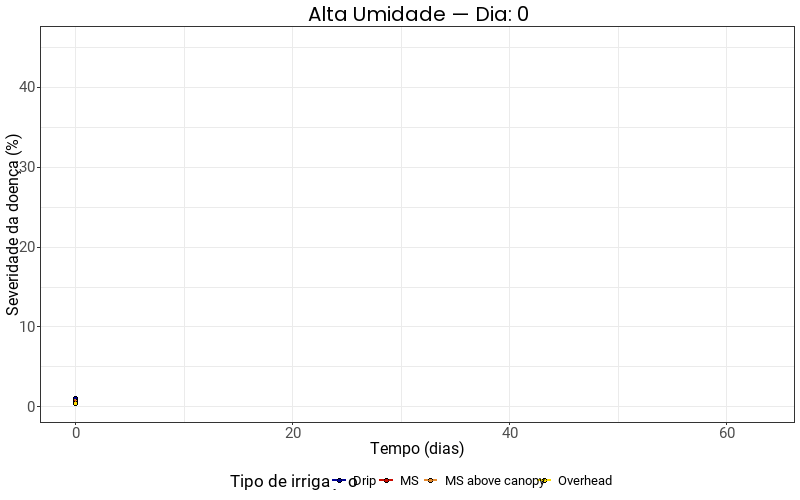
Observações:
Neste estudo, foram avaliados cinco tipos de irrigação sob dois níveis de umidade do solo: High (alta) e Moderate (moderada). No entanto, o experimento não segue um delineamento fatorial completo, ou seja, nem todos os tipos de irrigação possuem dados para ambos os níveis de umidade.
Mais especificamente:
O sistema de irrigação Drip possui dados apenas sob condição de alta umidade (High), não havendo registros para umidade moderada;
Por outro lado, o sistema Furrow está representado apenas sob umidade moderada (Moderate), sem dados disponíveis para alta umidade.
Devido a essas lacunas no delineamento, optamos por remover as combinações incompletas. Como consequência, os tratamentos “Drip” (alta umidade) e “Furrow” (umidade moderada) foram excluídos da análise, uma vez que não permitem a comparação entre os dois níveis de umidade. Essa decisão teve como objetivo garantir uma análise da interação entre os métodos de irrigação sob diferentes condições de umidade.
# Identificar quais irrigation_type têm os dois níveis de moisture
tipos_validos <- dados %>%
group_by(irrigation_type) %>%
summarise(n_moisture = n_distinct(moisture)) %>%
filter(n_moisture == 2) %>%
pull(irrigation_type)
# Filtrar os dados para manter apenas os tipos válidos
dados_filtrados <- dados %>%
filter(irrigation_type %in% tipos_validos)Boxplot de severidade final
Filtra o conjunto dados_filtrados para manter apenas as observações no tempo 63, considerado como tempo final de avaliação da severidade.
dados_63 <- dados_filtrados |>
dplyr::filter(time == 63)
aov_dados63 = aov(sev ~ irrigation_type*moisture + as.factor(block), data = dados_63)
summary(aov_dados63) Df Sum Sq Mean Sq F value Pr(>F)
irrigation_type 2 0.22391 0.11195 462.898 1.39e-10 ***
moisture 1 0.00323 0.00323 13.342 0.00444 **
as.factor(block) 2 0.00011 0.00005 0.221 0.80572
irrigation_type:moisture 2 0.00177 0.00089 3.661 0.06413 .
Residuals 10 0.00242 0.00024
---
Signif. codes: 0 '***' 0.001 '**' 0.01 '*' 0.05 '.' 0.1 ' ' 1Após visualizar a severidade com todos os tempos de avaliação, selecionou-se apenas a severidade final para plotar em um boxplot.
ggplot(dados_63, aes(x = irrigation_type, y = sev, fill = irrigation_type, color = irrigation_type)) +
geom_boxplot(alpha = 0.8, size = 0.8, show.legend = FALSE) +
labs(
title = "Severidade por Tipo de Irrigação e Umidade",
x = NULL, # >>> remove o título do eixo X
y = "Severidade",
fill = "Tipo de Irrigação", # >>> legenda mais limpa
color = "Tipo de Irrigação"
) +
geom_jitter(shape = 1, size = 1) +
scale_fill_manual(values = cores_irrigation) + # >>> novas cores por tipo
scale_color_manual(values = cores_contorno) + # >>> novos contornos por tipo
facet_wrap(~moisture) +
theme_minimal() +
theme(
plot.title = element_text(family = "poppins", size = 15, face = "bold", hjust = 0.5),
plot.title.position = "plot",
axis.title = element_text(family = "roboto", size = 12, face = "plain"),
axis.text.x = element_blank(), # >>> inclinação para visualização melhor
axis.text.y = element_text(family = "roboto", size = 12),
legend.title = element_text(family = "roboto", size = 13),
legend.text = element_text(family = "roboto", size = 10), # >>> aumento da fonte para melhor leitura
legend.position = "bottom"
) +
guides(
fill = guide_legend(override.aes = list(shape = 21, size = 5))
)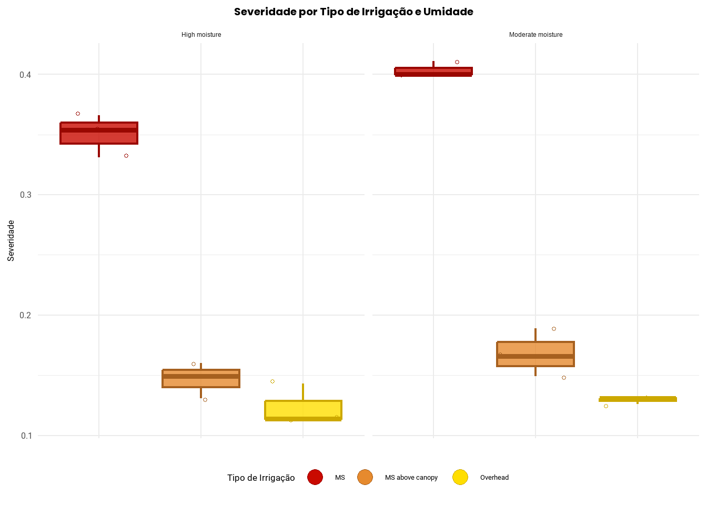
Alta umidade (High moisture)
O tratamento MS apresenta a maior severidade média e também uma distribuição mais compacta, indicando que os valores são consistentemente altos nesse tratamento, sem muita variação entre repetições;
O tratamento MS above canopy apresenta nível intermediário de severidade, com uma faixa mais ampla de variação entre os dados, mas ainda abaixo do MS;
O tratamento Overhead apresenta a menor severidade, com valores mais baixos e relativamente homogêneos, sugerindo uma eficiência maior no controle da doença sob alta umidade.
Umidade moderada (Moderate moisture)
A severidade permanece alta no tratamento MS, indicando que esse sistema de irrigação favorece o desenvolvimento da doença independentemente da umidade;
O tratamento MS above canopy novamente ocupa uma posição intermediária;
O tratamento Overhead continua sendo o mais eficaz, com a menor severidade registrada, inclusive com menor variabilidade.
Análise estatística e teste de hipóteses
Hipótese nula (H₀): A severidade da doença é igual para todos os tratamentos estudados;
Hipótese alternativa (Hₐ): Pelo menos um dos tratamentos apresenta severidade média diferente da dos demais.
ANOVA
Para a realização da ANOVA, foi considerado apenas o último tempo de avaliação da severidade da doença (aos 63 dias de avaliação), uma vez que o objetivo principal era identificar quais tratamentos apresentaram menor severidade e, portanto, foram mais eficazes no controle da doença. A análise foi conduzida para avaliar os efeitos do tipo de irrigação (irrigation_type), do nível de umidade do solo (moisture) e de sua interação (irrigation_type × moisture). O bloco experimental (block) foi incluído como fator aleatório, convertido com as.factor(block).
A análise do modelo de ANOVA foi realizada utilizando a função aov, a qual faz parte do pacote base do R. Os resultados da ANOVA foram obtidos com summary(aov_dados63), permitindo a identificação de efeitos significativos entre os tratamentos.
| Efeito | df | F value | Pr(>F) | Significância |
|---|---|---|---|---|
irrigation_type |
2 | 462.898 | 1.39e-10 | *** significativo ao nível de 0% |
moisture |
1 | 13.342 | 0.00444 | ** significativo ao nível de 0,1% |
block (como fator) |
2 | 0.221 | 0.80572 | NS |
irrigation_type:moisture |
2 | 3.661 | 0.06413 | . significativo ao nível de 5% |
residual |
10 | — | — | — |
A hipótese nula (H₀) foi rejeitada, uma vez que os valores de p para os fatores principais foram menores que ao nível de significância de 0,05. Assim, aceita-se a hipótese alternativa (Hₐ), indicando que pelo menos um dos tratamentos difere significativamente dos demais.
Efeito principal de tipo de irrigação (irrigation_type):
Muito significativo (p < 0,001), indicando que os diferentes métodos de irrigação afetaram de forma clara e consistente a severidade da doença;Efeito principal de umidade (moisture):
Significativo (p = 0,00444), sugerindo que o nível de umidade do solo (alta vs. moderada) também teve impacto importante na severidade da doença, independentemente do tipo de irrigação;Efeito do bloco (block):
Não significativo (p = 0,80572), indicando que a variação entre blocos foi mínima, o que pode ser interpretado como consistência entre repetições;Interação entre irrigação e umidade (irrigation_type:moisture): Marginalmente significativa (p = 0,06413), a interação entre os fatores sugere que o efeito da umidade pode depender do tipo de irrigação. Embora não tenha atingido significância estatística ao nível de 5%, o valor de p indica uma tendência de interação que poderia se tornar significativa com um maior número de repetições ou uma amostra mais robusta, reduzindo a variabilidade e aumentando o poder do teste.
Checagem das premissas
Histograma
Para verificar a normalidade dos resíduos do modelo de ANOVA, foi construído um histograma dos resíduos utilizando a função hist(). O comando residuals(aov_dados63) extrai os resíduos do modelo.
# Histogram
hist(residuals(aov_dados63),
main = "Histograma dos resíduos da ANOVA (SEV)",
xlab = "Resíduos",
ylab = "Frequência",
col = "lightgreen",
border = "black")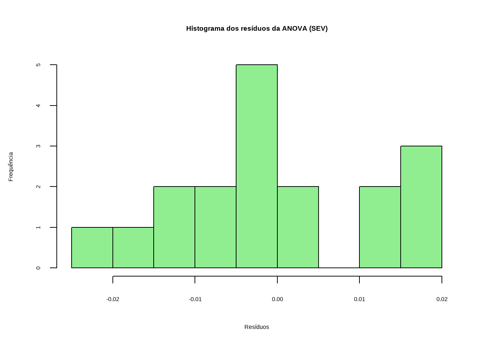
Interpretação
Forma aproximadamente simétrica: a distribuição dos resíduos é centrada em torno de zero, o que é um indicativo positivo de normalidade. Os resíduos estão distribuídos em um intervalo relativamente estreito (aproximadamente entre -0,025 e 0,02), sugerindo ausência de valores extremos (outliers). A maior frequência de resíduos ocorre próxima de zero, o que é característico de distribuições normais.
DHARMa
Para avaliar as suposições do modelo linear ajustado, foi utilizada a simulação de resíduos por meio do pacote DHARMa.
Primeiramente, foi ajustado um modelo linear aos dados. Em seguida, os resíduos foram simulados com a função simulateResiduals() do pacote DHARMa, que gera resíduos padronizados baseados em simulações sob o modelo ajustado. Essa abordagem é especialmente útil para detectar desvios de normalidade, heterocedasticidade e efeitos de estrutura nos dados.
Painel esquerdo - QQ-plot dos resíduos simulados:
Esse gráfico demonstra a normalidade dos resíduos de forma robusta.
Os triângulos seguem bem a linha vermelha de 45°, o que é um bom sinal.
KS test: p = 0.69937, maior que p > 0.05. Não há evidência de que os resíduos violam a normalidade.
Dispersion test: p = 0.24. Não há problema de superdispersão.
Outlier test: p = 1. Nenhum outlier significativo detectado.
Os resíduos estão aproximadamente normais e sem outliers problemáticos. Pressuposto de normalidade atendido.
Painel Direito - Resíduos simulados vs valores preditos
O que o gráfico indica:
Red curves = significância estatística: a presença de curvas vermelhas indica que houve desvio significativo dos quantis esperados.
O texto vermelho confirma: Isso não é um problema grave, mas sugere que:
Pode haver algum padrão residual leve, talvez relacionado a variâncias diferentes entre grupos (heterocedasticidade leve).
Isso não invalida o modelo, mas é um sinal para cautela na interpretação dos efeitos.
Por isso, foi realizado o leveneTest() para confirmar se há heterocedasticidade.
Depois foram utilizados testes mais específicos para verificar a normalidade:
modelo_lm <- lm(sev ~ irrigation_type * moisture + as.factor(block), data = dados_63)
# 4. Simular resíduos com DHARMa
residuos_sim <- simulateResiduals(fittedModel = modelo_lm)
# 5. Plotar diagnósticos
plot(residuos_sim)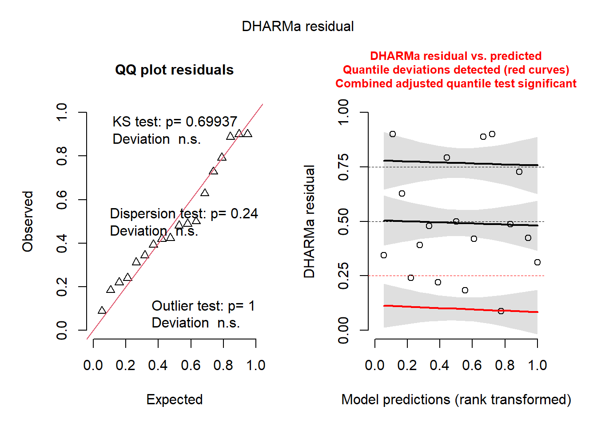
Normalidade
Primeiramente, utilizou-se a função check_normality() para obter uma verificação geral da normalidade dos resíduos.
Em seguida, foi construído um gráfico QQ-plot (Quantile-Quantile). Esse gráfico compara a distribuição dos resíduos observados com a distribuição normal teórica. Uma boa aderência dos pontos à linha vermelha indica que os resíduos seguem aproximadamente uma distribuição normal, o que foi observado no gráfico, sem desvios acentuados.
Por fim, foi aplicado o teste de Shapiro-Wilk shapiro.test(). Esse teste estatístico avalia formalmente a hipótese nula de que os resíduos seguem uma distribuição normal. Um valor de p ≥ que 0,05 indica que não há evidências para rejeitar a normalidade dos resíduos, confirmando que essa suposição foi atendida no modelo.
check_normality(aov_dados63)OK: residuals appear as normally distributed (p = 0.369).# QQ-plot
qqnorm(residuals(aov_dados63), main = "QQ-Plot dos resíduos")
qqline(residuals(aov_dados63), col = "red", lwd = 2)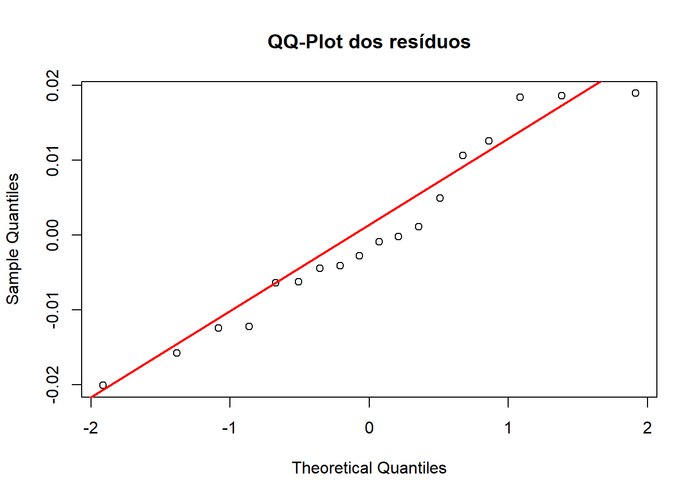
# Teste de Shapiro-Wilk
shapiro.test(residuals(aov_dados63))
Shapiro-Wilk normality test
data: residuals(aov_dados63)
W = 0.9462, p-value = 0.3686Homocedasticidade
Teste geral com check_heteroscedasticity().
Testes estatísticos:
Bartlett’s test (bartlett.test): É indicado apenas quando os resíduos seguem uma distribuição normal.
Um valor de p > 0,05 indica que não há evidência significativa de heterogeneidade de variâncias, ou seja, a suposição de homocedasticidade é atendida.
Levene’s test (leveneTest): Este teste é mais robusto quando a normalidade não pode ser totalmente garantida.
Um p > 0,05 sugere homogeneidade de variâncias entre os grupos. Se o valor for menor que 0,05, isso indicaria heterocedasticidade, violando uma das suposições da ANOVA.
check_heteroscedasticity(aov_dados63)OK: Error variance appears to be homoscedastic (p = 0.829).#Bartlett (apenas se resíduos forem normais):
bartlett.test(sev ~ interaction(irrigation_type, moisture), data = dados_63)
Bartlett test of homogeneity of variances
data: sev by interaction(irrigation_type, moisture)
Bartlett's K-squared = 5.8917, df = 5, p-value = 0.3169#Para dados não necessariamente normais
leveneTest(sev ~ interaction(irrigation_type, moisture), data = dados_63)Levene's Test for Homogeneity of Variance (center = median)
Df F value Pr(>F)
group 5 0.5556 0.732
12 Teste de comparação de médias
# Médias ajustadas
medias <- emmeans(modelo_lm, ~ irrigation_type * moisture)
# Comparações de médias com agrupamento por letras
letras <- cld(medias, adjust = "sidak", Letters = letters)
# Visualizar resultado
print(letras) irrigation_type moisture emmean SE df lower.CL upper.CL .group
Overhead High moisture 0.124 0.00898 10 0.0944 0.153 a
Overhead Moderate moisture 0.129 0.00898 10 0.1000 0.159 a
MS above canopy High moisture 0.147 0.00898 10 0.1174 0.176 a
MS above canopy Moderate moisture 0.168 0.00898 10 0.1387 0.197 a
MS High moisture 0.350 0.00898 10 0.3210 0.380 b
MS Moderate moisture 0.404 0.00898 10 0.3744 0.433 c
Results are averaged over the levels of: block
Confidence level used: 0.95
Conf-level adjustment: sidak method for 6 estimates
P value adjustment: sidak method for 15 tests
significance level used: alpha = 0.05
NOTE: If two or more means share the same grouping symbol,
then we cannot show them to be different.
But we also did not show them to be the same. A tabela abaixo apresenta as médias ajustadas da severidade da doença para cada combinação de tipo de irrigação e umidade, incluindo erro padrão, intervalos de confiança, e o agrupamento por letras. O agrupamento foi feito com base na comparação múltipla utilizando o método de Sidak ajustado para Tukey (α = 0,05). Letras iguais indicam ausência de diferença estatística significativa.
| Tipo de Irrigação | Umidade | Média Ajustada | SE | GL | IC Inferior | IC Superior | Grupo |
| Overhead | Alta | 0.124 | 0.00898 | 10 | 0.0944 | 0.153 | a |
| Overhead | Moderada | 0.129 | 0.00898 | 10 | 0.1 | 0.159 | a |
| MS above canopy | Alta | 0.147 | 0.00898 | 10 | 0.1174 | 0.176 | a |
| MS above canopy | Moderada | 0.168 | 0.00898 | 10 | 0.1387 | 0.197 | a |
| MS | Alta | 0.35 | 0.00898 | 10 | 0.321 | 0.38 | b |
| MS | Moderada | 0.404 | 0.00898 | 10 | 0.3744 | 0.433 | c |
emmeans(modelo_lm, pairwise ~ moisture, adjust = "tukey")$emmeans
moisture emmean SE df lower.CL upper.CL
High moisture 0.207 0.00518 10 0.195 0.218
Moderate moisture 0.234 0.00518 10 0.222 0.245
Results are averaged over the levels of: irrigation_type, block
Confidence level used: 0.95
$contrasts
contrast estimate SE df t.ratio p.value
High moisture - Moderate moisture -0.0268 0.00733 10 -3.653 0.0044
Results are averaged over the levels of: irrigation_type, block cld(emmeans(modelo_lm, ~ moisture), adjust = "tukey") moisture emmean SE df lower.CL upper.CL .group
High moisture 0.207 0.00518 10 0.193 0.221 1
Moderate moisture 0.234 0.00518 10 0.220 0.247 2
Results are averaged over the levels of: irrigation_type, block
Confidence level used: 0.95
Conf-level adjustment: sidak method for 2 estimates
significance level used: alpha = 0.05
NOTE: If two or more means share the same grouping symbol,
then we cannot show them to be different.
But we also did not show them to be the same. A tabela abaixo apresenta as médias ajustadas da severidade da doença para cada nível de umidade, com erro padrão, intervalos de confiança e agrupamento por letras. O agrupamento foi realizado utilizando o método de Sidak (α = 0,05), ajustado a partir de comparações múltiplas.
| Umidade | Média Ajustada | SE | GL | IC Inferior | IC Superior | Grupo |
| Alta | 0.207 | 0.00518 | 10 | 0.193 | 0.221 | 1 |
| Moderada | 0.234 | 0.00518 | 10 | 0.22 | 0.247 | 2 |
AUDPC
Para quantificar o avanço da doença ao longo do tempo, foi realizada a análise da Área Abaixo da Curva de Progresso da Doença (AACPD ou AUDPC), utilizando todos os tempos de avaliação disponíveis no experimento. Essa métrica resume, em um único valor, a intensidade acumulada da doença durante o período observado, sendo amplamente utilizada em estudos epidemiológicos por refletir tanto a severidade quanto a duração da infecção.
A análise foi conduzida com o pacote epifitter (fornece funções para análise do cálculo da AACPD), especificamente por meio da função audpc(). A função audpc() calcula a Área Abaixo da Curva de Progresso da Doença com base: na severidade da doença (sev) multiplicada por 100 (para expressar em %), e no tempo de avaliação (time). O resultado é armazenado em aacpd_resultado, que contém uma linha para cada combinação de tratamento e bloco, com o valor correspondente da AACPD.
library(epifitter)
library(dplyr)
# 3. Calcular a AACPD para cada combinação de tratamento e bloco
aacpd_resultado <- dados2 %>%
group_by(tratamento, block) %>%
summarise(AACPD = audpc(sev*100, time), .groups = "drop")
# 4. Visualizar os resultados
print(aacpd_resultado)# A tibble: 24 × 3
tratamento block AACPD
<chr> <dbl> <dbl>
1 Drip + High moisture 1 1300.
2 Drip + High moisture 2 1388.
3 Drip + High moisture 3 1329.
4 Furrow + Moderate moisture 1 1353.
5 Furrow + Moderate moisture 2 1400.
6 Furrow + Moderate moisture 3 1387.
7 MS + High moisture 1 806.
8 MS + High moisture 2 924.
9 MS + High moisture 3 826.
10 MS + Moderate moisture 1 1052.
# ℹ 14 more rowsANOVA
modelo_aacpd <- aov(AACPD ~ tratamento, data = aacpd_resultado)
summary(modelo_aacpd) Df Sum Sq Mean Sq F value Pr(>F)
tratamento 7 4053698 579100 400.3 <2e-16 ***
Residuals 16 23148 1447
---
Signif. codes: 0 '***' 0.001 '**' 0.01 '*' 0.05 '.' 0.1 ' ' 1Checagem das premissas
Histograma
O gráfico mostrou uma distribuição aproximadamente simétrica e centrada em torno de zero, o que indica que os resíduos seguem uma tendência próxima à distribuição normal.
# Histogram
hist(residuals(modelo_aacpd),
main = "Histograma dos resíduos da ANOVA (AACPD)",
xlab = "Resíduos",
ylab = "Frequência",
col = "lightgreen",
border = "black")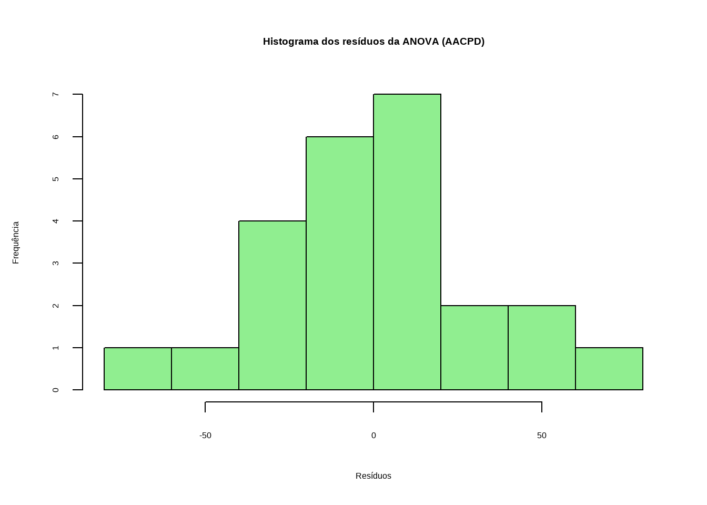
DHARMa (AACPD)
Os resultados indicaram que o modelo se comporta adequadamente, sem violações evidentes dos pressupostos estatísticos. Entretanto o resultado apresentado pelo teste de resíduos simulados vs valores preditos exige com o que seja necessário fazer testes adicionais.
modelo_lmaacpd <- lm(AACPD ~ tratamento + as.factor(block), data = aacpd_resultado)
# 4. Simular resíduos com DHARMa
residuos_simaacpd <- simulateResiduals(fittedModel = modelo_lmaacpd)
# 5. Plotar diagnósticos
plot(residuos_simaacpd)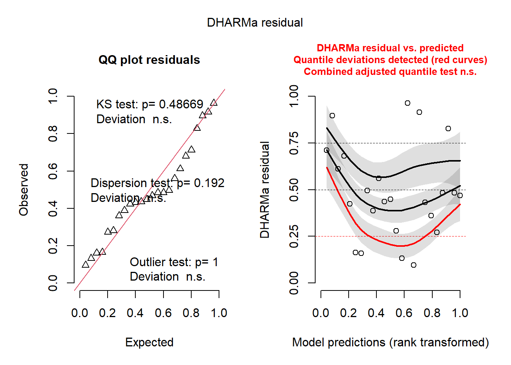
Normalidade (AACPD)
A normalidade dos resíduos do modelo de ANOVA para a variável AACPD foi avaliada por meio do gráfico QQ-Plot e do teste de Shapiro-Wilk. O gráfico indicou boa aderência dos resíduos à linha de normalidade. Já o teste de Shapiro-Wilk apresentou valor de p = 0,3125, indicando que não há evidência significativa de violação da normalidade (p > 0,05). Portanto, o modelo atende ao pressuposto de normalidade dos resíduos, sendo apropriado para a análise.
check_normality(modelo_aacpd)OK: residuals appear as normally distributed (p = 0.972).# QQ-plot
qqnorm(residuals(modelo_aacpd), main = "QQ-Plot dos resíduos")
qqline(residuals(modelo_aacpd), col = "red", lwd = 2)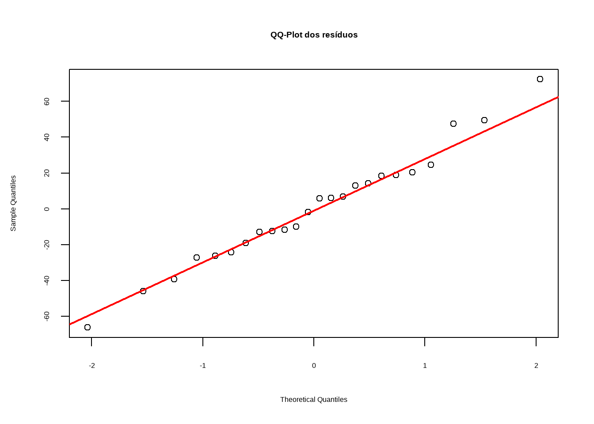
# Teste de Shapiro-Wilk
shapiro.test(residuals(modelo_aacpd))
Shapiro-Wilk normality test
data: residuals(modelo_aacpd)
W = 0.9855, p-value = 0.9722Homocedasticidade (AACPD)
Esses dados confirmam a homocedasticidade dos dados, confirmando portanto a última premissa da ANOVA.
check_heteroscedasticity(modelo_aacpd)OK: Error variance appears to be homoscedastic (p = 0.087).#Bartlett (apenas se resíduos forem normais):
bartlett.test(AACPD ~ tratamento, data = aacpd_resultado)
Bartlett test of homogeneity of variances
data: AACPD by tratamento
Bartlett's K-squared = 7.7261, df = 7, p-value = 0.3574#Para dados não necessariamente normais
leveneTest(AACPD ~ tratamento, data = aacpd_resultado)Levene's Test for Homogeneity of Variance (center = median)
Df F value Pr(>F)
group 7 0.5639 0.7744
16 Boxplot (AACPD)
aacpd_resultado2 <- aacpd_resultado %>%
mutate(
irrigation_type = case_when(
str_detect(tratamento, "Drip") ~ "Drip",
str_detect(tratamento, "Furrow") ~ "Furrow",
str_detect(tratamento, "MS above canopy") ~ "MS above canopy",
str_detect(tratamento, "MS") ~ "MS",
str_detect(tratamento, "Overhead") ~ "Overhead"
)
)
aacpd_resultado2 <- aacpd_resultado2 %>%
mutate(
irrigation_type = case_when(
str_detect(tratamento, "Drip") ~ "Drip",
str_detect(tratamento, "Furrow") ~ "Furrow",
str_detect(tratamento, "MS above canopy") ~ "MS above canopy",
str_detect(tratamento, "MS") ~ "MS",
str_detect(tratamento, "Overhead") ~ "Overhead"
),
moisture = case_when(
str_detect(tratamento, "High moisture") ~ "High moisture",
str_detect(tratamento, "Moderate moisture") ~ "Moderate moisture",
str_detect(tratamento, "Low moisture") ~ "Low moisture"
)
)
ggplot(aacpd_resultado2, aes(x = tratamento, y = AACPD, fill = irrigation_type, color = irrigation_type)) +
geom_boxplot(alpha = 0.8, size = 0.8, show.legend = FALSE) +
labs(
title = "Área Abaixo da Curva do Progresso da Doença (AACPD)",
x = NULL,
y = "AACPD",
fill = "Tipo de Irrigação",
color = "Tipo de Irrigação"
) +
geom_jitter(shape = 1, size = 1) +
scale_fill_manual(values = cores_irrigation) +
scale_color_manual(values = cores_contorno) +
facet_wrap(~moisture) +
theme_minimal() +
theme(
plot.title = element_text(family = "poppins", size = 15, face = "bold", hjust = 0.5),
plot.title.position = "plot",
axis.title = element_text(family = "roboto", size = 12, face = "plain"),
axis.text.x = element_blank(),
axis.text.y = element_text(family = "roboto", size = 12),
legend.title = element_text(family = "roboto", size = 13),
legend.text = element_text(family = "roboto", size = 10),
legend.position = "bottom"
) +
guides(
fill = guide_legend(override.aes = list(shape = 21, size = 5))
)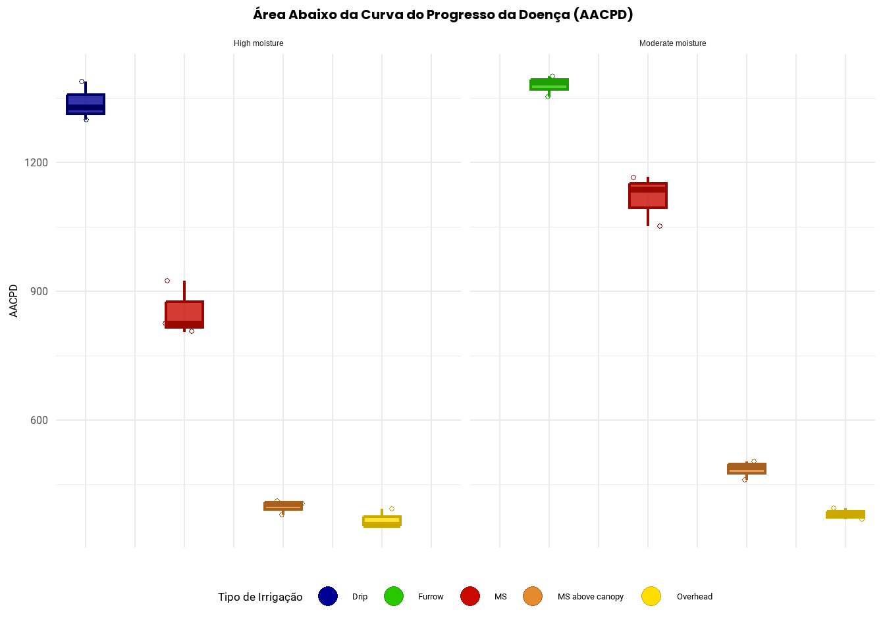
Teste de comparação de médias (AACPD)
# ANOVA já ajustada no objeto modelo_aacpd
# Teste de comparação de médias (Tukey)
library(agricolae)
# Converter bloco para fator, se necessário
aacpd_resultado$block <- as.factor(aacpd_resultado$block)
# Rodar ANOVA novamente com bloco (modelo mais completo)
modelo_com_bloco <- aov(AACPD ~ tratamento + block, data = aacpd_resultado)
# Teste de Tukey com agricolae
tukey_resultado <- HSD.test(modelo_com_bloco, trt = "tratamento", group = TRUE)
# Visualizar grupos
print(tukey_resultado$groups) AACPD groups
Furrow + Moderate moisture 1379.9333 a
Drip + High moisture 1338.9833 a
MS + Moderate moisture 1118.3667 b
MS + High moisture 852.0167 c
MS above canopy + Moderate moisture 485.5667 d
MS above canopy + High moisture 399.2333 de
Overhead + Moderate moisture 381.2667 e
Overhead + High moisture 368.4333 eA tabela abaixo apresenta as médias de AACPD e o agrupamento por letras. O agrupamento foi feito com base na comparação múltipla utilizando o método de TukeyHSD ajustado para Tukey (α = 0,05). Letras iguais indicam ausência de diferença estatística significativa.
| Tratamento | Média AACPD | Grupo |
|---|---|---|
| Furrow + Moderate moisture | 1379.93 | a |
| Drip + High moisture | 1338.98 | a |
| MS + Moderate moisture | 1118.37 | b |
| MS + High moisture | 852.02 | c |
| MS above canopy + Moderate moisture | 485.57 | d |
| MS above canopy + High moisture | 399.23 | de |
| Overhead + Moderate moisture | 381.27 | e |
| Overhead + High moisture | 368.43 | e |